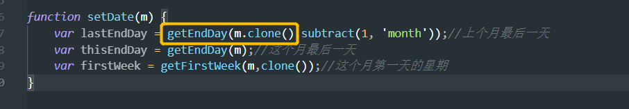
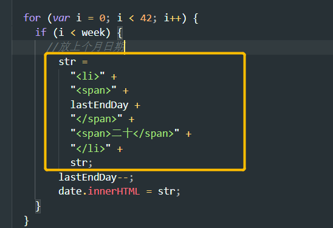

1 .做日历的时候首先要知道当前月份是多少天，其次要知道当前月第一天对应哪一个星期，然后剩下的第一行左边格子就是上个月的天数，最后一行剩下的格子就是下个月的天数
2.上个月倒着做减法，下个月顺着做加法
3.要注意当操作用户传进来的moment时，因为moment是会被修改的，所以要用clone()方法克隆了再对moment来进行操作

4.要让上个月的天数倒着生成结构，不能用str+= ,因为str+=相当于str(原)+str(新生成的)，会往右边加，要通过“str=新生成的’+str(原)”这样子来加
